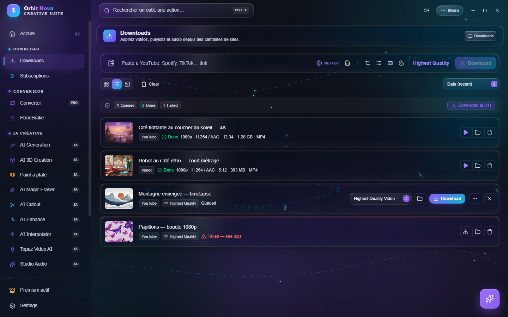
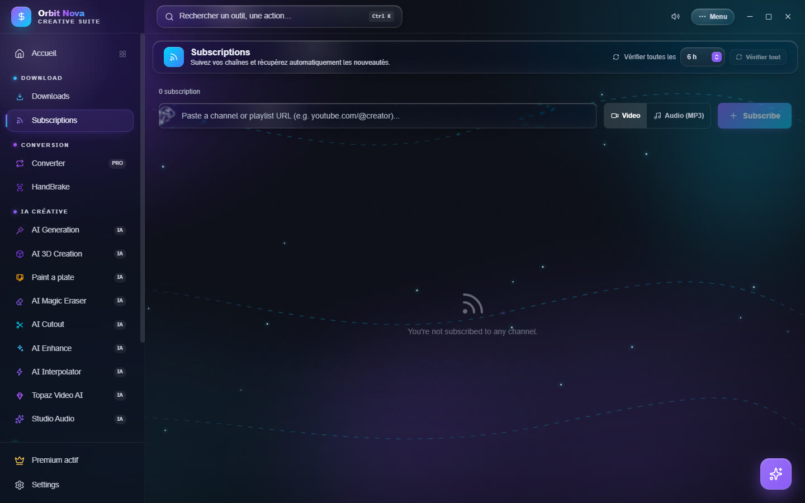

Downloads
Only download content you have the right to copy: your own videos, royalty-free content, or for a use allowed by the law of your country.
Download a video
- Copy the link of the video (YouTube, TikTok, Instagram, X, Vimeo, Twitch, SoundCloud… several hundred sites are supported).
- In the Downloads tab, paste it in the top bar (clipboard button on the left, or Ctrl+V). Orbit analyzes the link and shows the title and thumbnail.
- Click Download to start right away, or press Enter to queue it and start everything later with Download all.


Files go to the folder shown at the top right (Downloads by default); click it to change it. Each item can also have its own folder (folder icon on its row).
Quality and format
The Highest Quality button, on the right of the bar, opens the format choice:
- Download Audio Only?: a switch to keep only the sound (MP3, FLAC, WAV, M4A, OGG);
- Download Format: from Highest Quality Video and Audio to 8K, 4K, 2K, 1080p, 720p, 480p, 360p, 144p, or standard MP4;
- Thumbnail: Off, Separate image, Embedded in the video or Both, with the image format (JPG, PNG, WEBP) and size.
This choice applies to the next links. For a queued item, the drop-down list on its row changes its own format.
The icons of the bar turn on options for the next links:
| Icon | Effect |
|---|---|
| SNIFFER | opens the built-in browser to catch hidden videos on a page (see below) |
| Document | imports a playlist exported as CSV (Exportify, TuneMyMusic, Soundiiz) |
| Image | thumbnail (set in the quality menu) |
| List | downloads the whole playlist instead of one video |
| CC | embeds subtitles in the file |
| Cookie | uses your browser's cookies (Chrome) for content that needs a login |
Permanent settings (H.264 forced for editing, metadata, chapters, SponsorBlock, automatic subtitles…) are in Settings › Downloads, see Settings.
The download list
Each row shows the source, the state, then the resolution, codecs, duration, size and container once the file is ready. The buttons on the right depend on the state:
- Queued: pick the format, the folder, Download, or … for Advanced options (Trimmer /
Scheduler):
- Trimmer: keep only a part (start and end, for example
01:20and02:45); - Scheduler: start the download at a set time.
- Trimmer: keep only a part (start and end, for example
- Active: pause, resume, cancel; the row shows the speed and the time left.
- Done: Play in Orbit (built-in player), open the folder, remove from the list.
- File deleted: the file is no longer on disk; Download again gets it back.
- Failed — see logs: the log explains the error; Retry starts again.
At the top of the list: the counters (Queued, Done, Failed), sorting (Date, Name, Size), three views (grid, list, compact) and Clear to remove finished items.
If Orbit or Windows closes during a download, Orbit resumes it at the next launch where it stopped.
Music: Spotify, Deezer and CSV
Paste a Spotify link (track, album, playlist or artist) or a Deezer link in the same bar. Orbit reads
the track list, finds each song on YouTube Music and saves it with its title, artist, album and cover (and
synced .lrc lyrics when they exist).
Spotify only shows the first 100 tracks of a playlist. For a longer playlist, export it as CSV (with Exportify, TuneMyMusic or Soundiiz) then import the file with the Document icon of the bar.
Orbit bypasses no protection: the sound comes from the public versions found on YouTube Music, not from Spotify.
Twitch
Twitch VODs and clips download by pasting their link. For a subscriber-only VOD, first sign in to your Twitch account in the built-in browser (SNIFFER): Orbit reuses that session.
File hosts
File host links (1fichier, MediaFire, Pixeldrain, Gofile…) also go in the bar. Orbit opens the page in the background, clicks the free download button, waits for the countdown if there is one, then downloads over several connections when the site allows it (often much faster than a browser). If a captcha shows up, the window appears so you can solve it.
Limits set by a free site (waiting, capped speed) stay those of the site: Orbit does not bypass them.
The built-in browser (Sniffer)
Some pages hide their video (embedded players, sites that need a login). Click SNIFFER: a browser opens inside Orbit. Go to the page and play the video: Orbit detects the streams and offers to download them. Streams in pieces (HLS, DASH) are rebuilt into one file.
Subscriptions
The Subscriptions tab follows channels or playlists and downloads new videos on its own.
- Paste the address of a channel or a playlist (for example
youtube.com/@creator). - Pick Video or Audio (MP3), then Subscribe.


For each subscription, set the Quality, the Number of videos (the latest N or All) and No Shorts or lives. At the top, the check interval sets how often Orbit looks for new videos, and Check all checks right now. Each subscription can be paused, checked alone or removed.
To keep your subscriptions when you change PC: Menu › Tools › Export/Backup Subscriptions, then Import/Restore Subscriptions on the other PC.